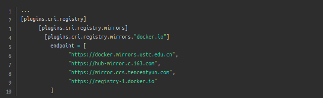
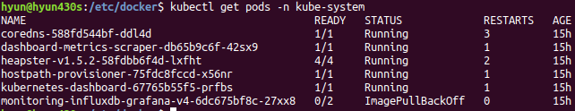

Installing Kubeflow¶
本文使用MicroK8s在Linux上安装Kubeflow
Install MicroK8s¶
Microk8s 需要在安装了Docker的前提下使用
sodu apt-get install docker.ioInstall MicroK8s on Linux
sudo snap install microk8s --classic --channel=1.18/stable
注解
sudo vi /etc/hostnamesudo vi /etc/hostsreboot添加路径
echo "export PATH=$PATH:/snap/bin" >> ~/.bashrcsource ~/.bashrc添加用户组
sudo usermod -a -G microk8s $USERsudo chown -f -R $USER ~/.kubesu - $USERCheck the status
microk8s status --wait-ready配置microk8s内置docker的registry.mirrors
编辑 /var/snap/microk8s/current/args/containerd-template.toml 文件，加入以下内容
启动相关的add-on
microk8s enable dashboard dns registry istio可通过
microk8s enable --help 命令查看可打开的服务
查看版本信息
sudo snap alias microk8s.kubectl kubectlkubectl version查看pods
kubectl get pods -n kube-systemkubectl get all --all-namespaces正常情况下都处于running状态，否则需要根据NAME查看pods具体情况
kubectl describe pods heapster-v1.5.2-58fdbb6f4d-lxfht -n kube-system可看到拉取镜像
k8s.gcr.io/heapster-amd64:v1.5.2 拉取失败
手动拉取镜像
sudo docker pull registry.aliyuncs.com/google_containers/heapster-amd64:v1.5.2sudo docker tag registry.aliyuncs.com/google_containers/heapster-amd64:v1.5.2 k8s.gcr.io/heapster-amd64:v1.5.2sudo docker save k8s.gcr.io/heapster-amd64:v1.5.2 > pause.tarmicrok8s.ctr image import pause.tarmicrok8s ctr image ls查看pod是否运行成功
访问dashboard
microk8s dashboard-proxy或者:
获取访问ip和端口
kubectl describe service kubernetes-dashboard -n kube-system
浏览器输入ip地址
获取token
token=$(microk8s kubectl -n kube-system get secret | grep default-token | cut -d " " -f1)
echo $token
kubectl -n kube-system describe secret $token
输入token后就进入管理页面了
解决google打不开dashboard
mkdir key && cd key
#生成证书
openssl genrsa -out dashboard.key 2048
#master ip 192.168.31.105
openssl req -new -out dashboard.csr -key dashboard.key -subj '/CN=192.168.31.105'
openssl x509 -req -in dashboard.csr -signkey dashboard.key -out dashboard.crt
#删除原有的证书secret
kubectl delete secret kubernetes-dashboard-certs -n kube-system
#创建新的证书secret
kubectl create secret generic kubernetes-dashboard-certs --from-file=dashboard.key --from-file=dashboard.crt -n kube-system
#查看pod
kubectl get pod -n kube-system
#删除pod
kubectl delete pod <pod name> -n kube-system
#重启
kubectl.stop
kubectl.start
Install Kubeflow¶
kubeflow 至少要求2CPUs，16Gb RAM，50Gb free disk。
install microk8s
microk8s.enable kubeflow
安装失败原因总结：
版本原因，microk8s 从1.17才开始支持kubeflow
juju报错，Couldn't contact api.jujucharms.com
Service snap.microk8s.daemon-apiserver is not running
资源不够
安装参考文档
常用命令¶
停止服务
microk8s.stop
启动服务
microk8s.start
卸载microk8s
sudo snap remove microk8s
查看node
kubectl get nodes
查看services
kubectl get services
查看当前安装的版本
snap list